Владикавказ Революции, 68
Разделы и цены собираются на странице скриптом. Если он не выполняется, спросите меню по телефону: 8 (918) 827 88 00.
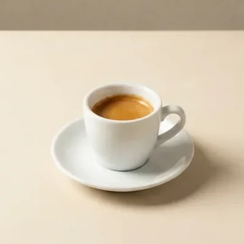
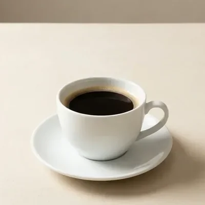
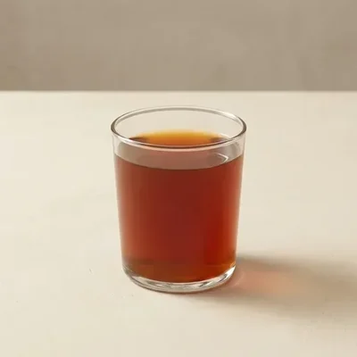
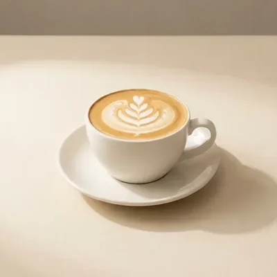
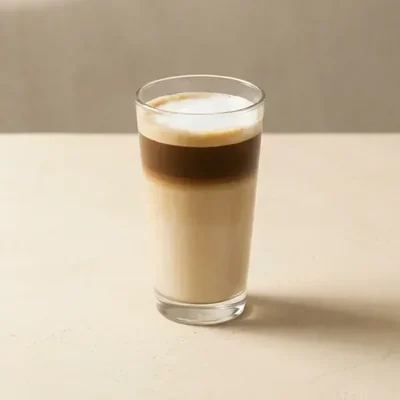
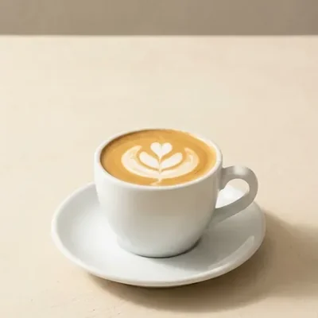
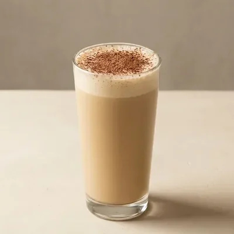
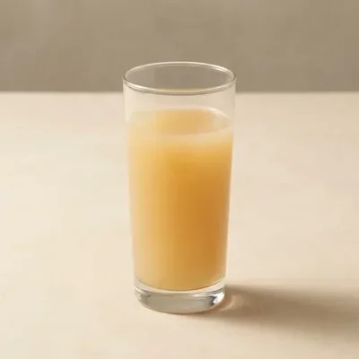
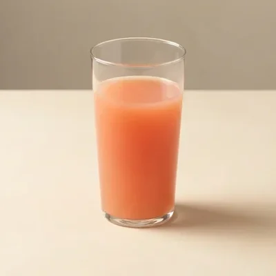
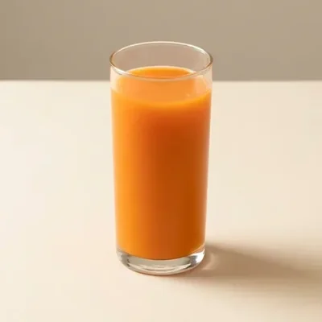
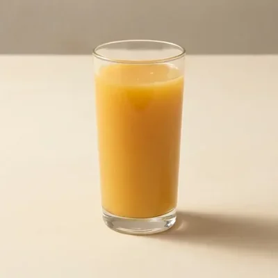
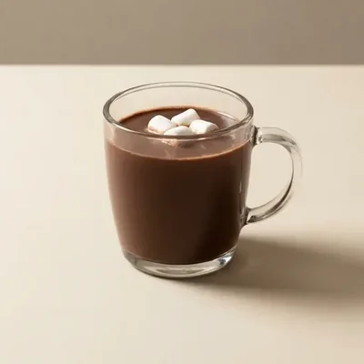
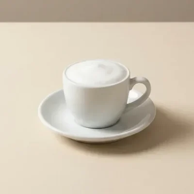
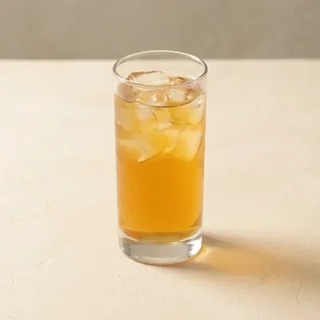
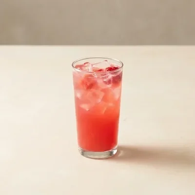
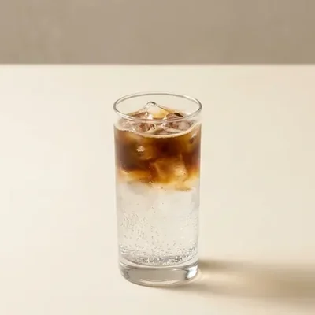
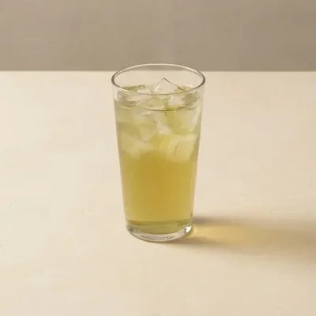
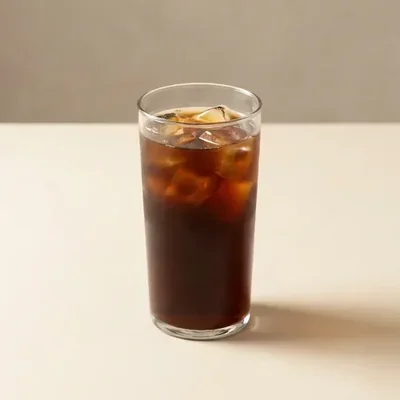
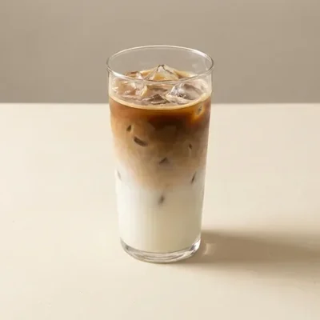
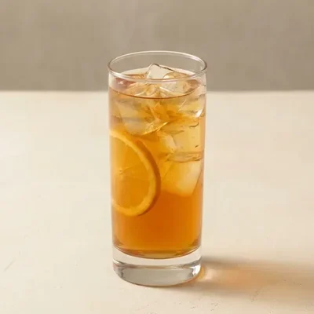
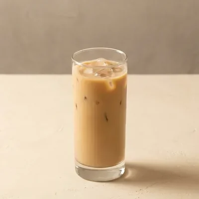
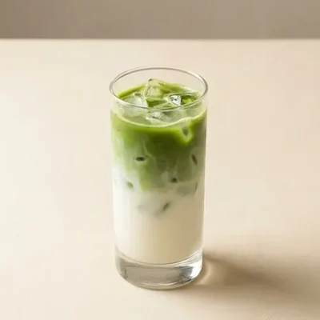
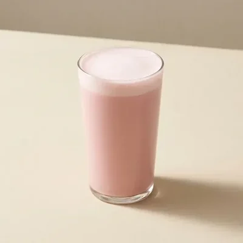
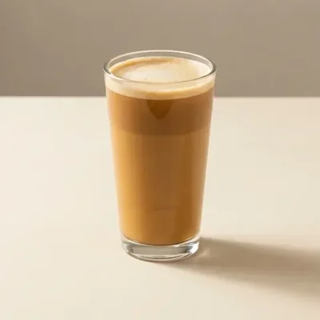
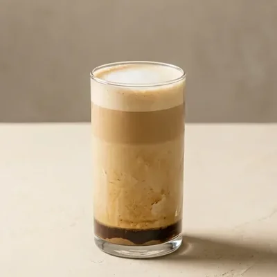
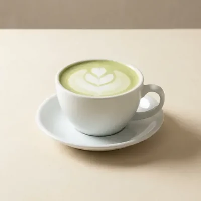
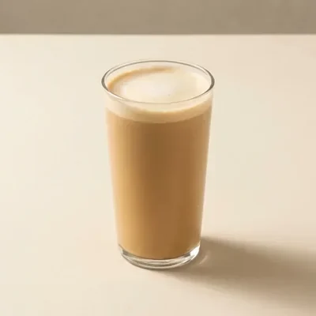
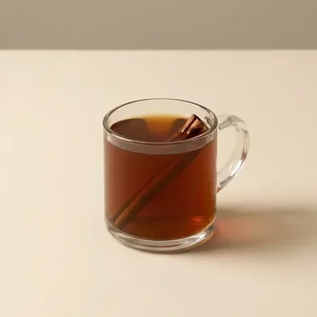
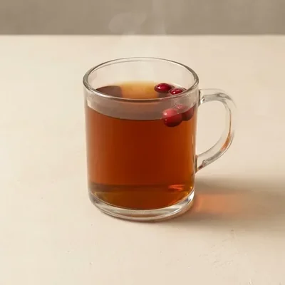
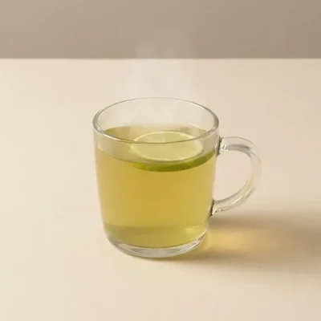
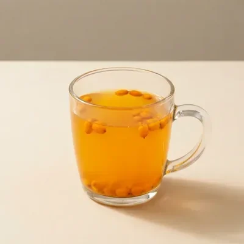
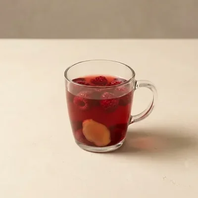
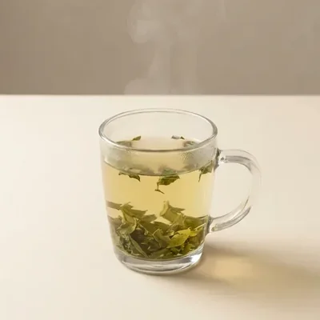
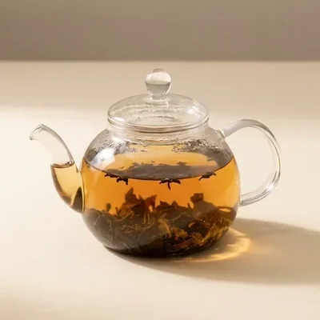
Фотографии напитков — образцы для этого макета, не съёмка MIDOV. Сама страница — концепт, а не официальный сайт кофейни.
Цены собираются на странице скриптом. Если он не выполняется, спросите меню по телефону: 8 (918) 827 88 00.